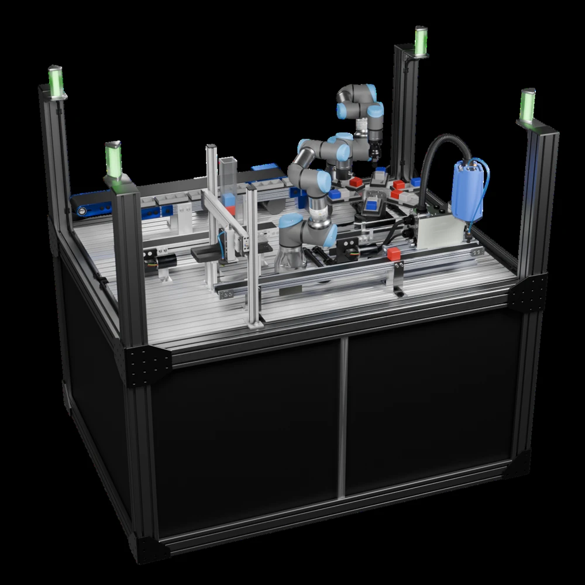
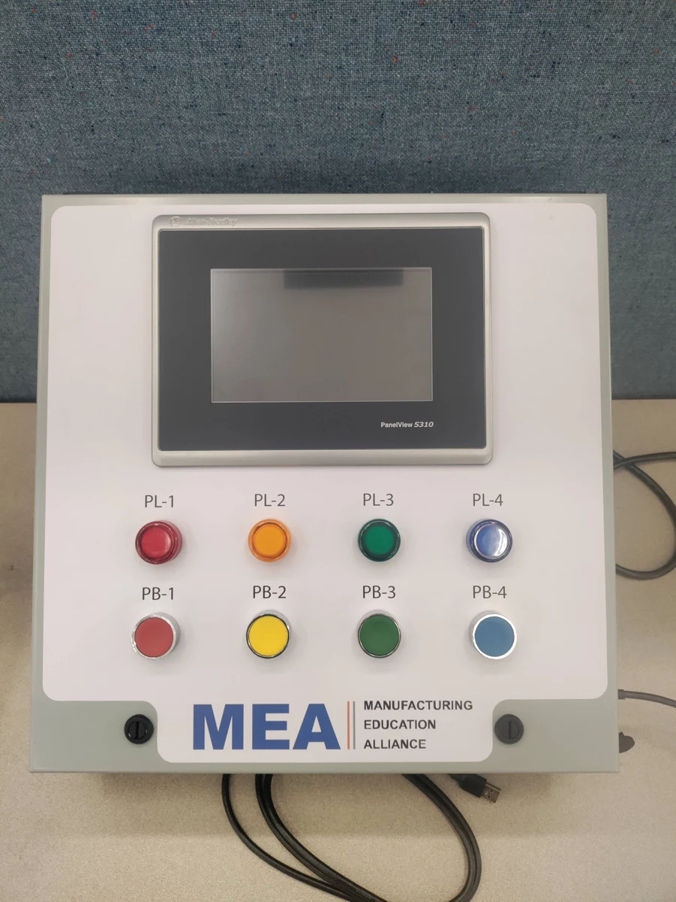
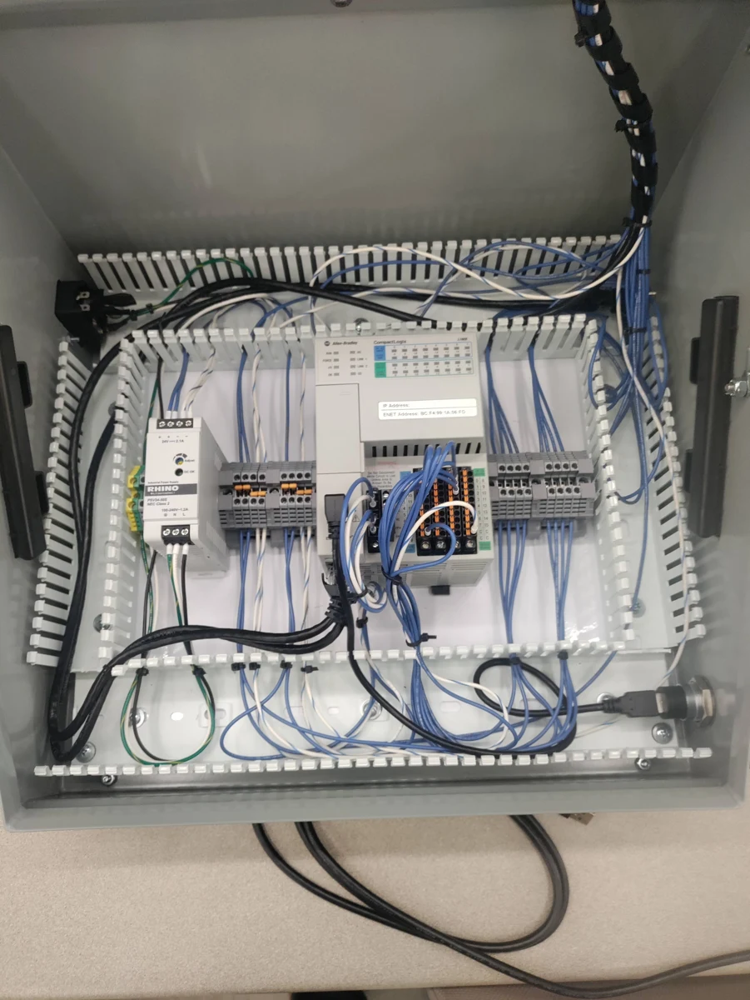
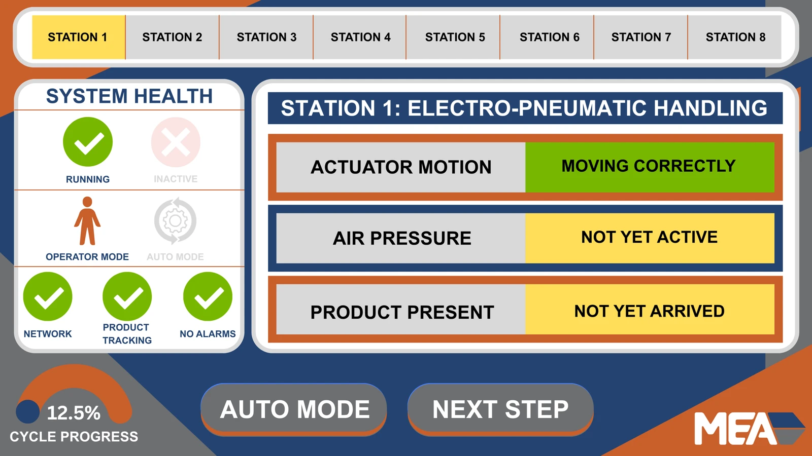
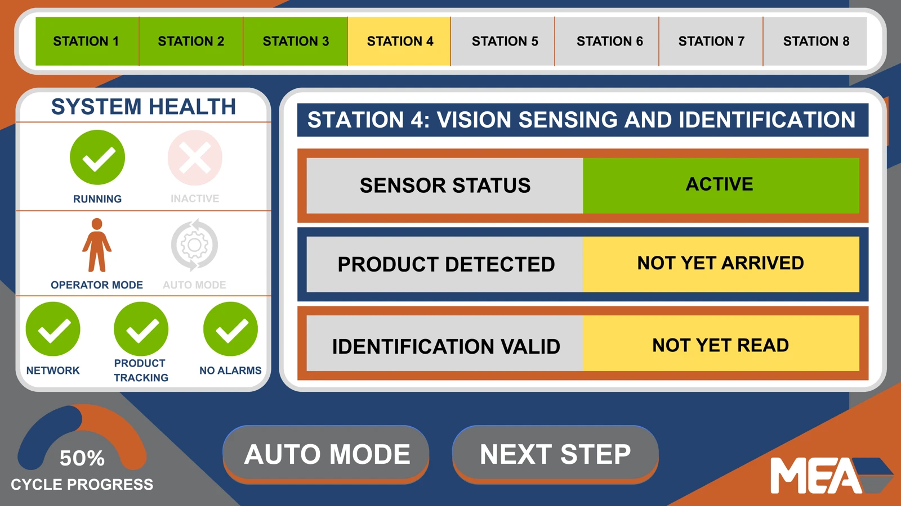
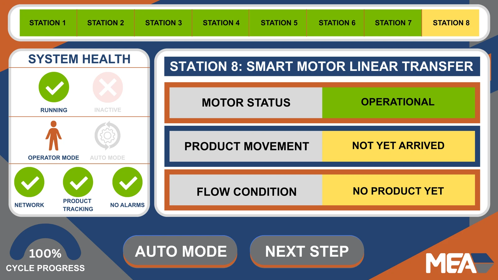
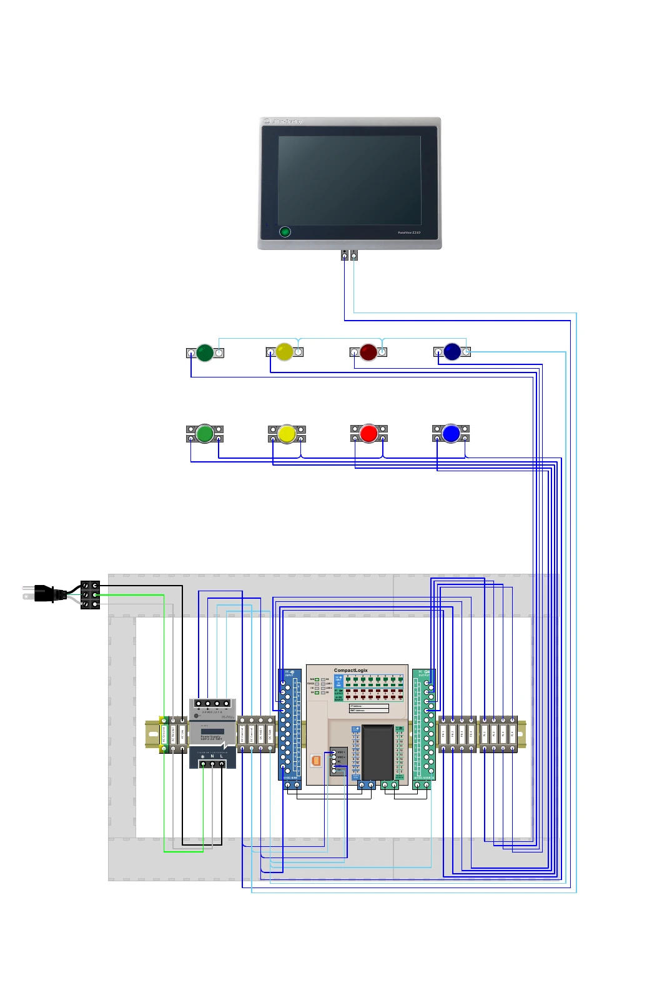
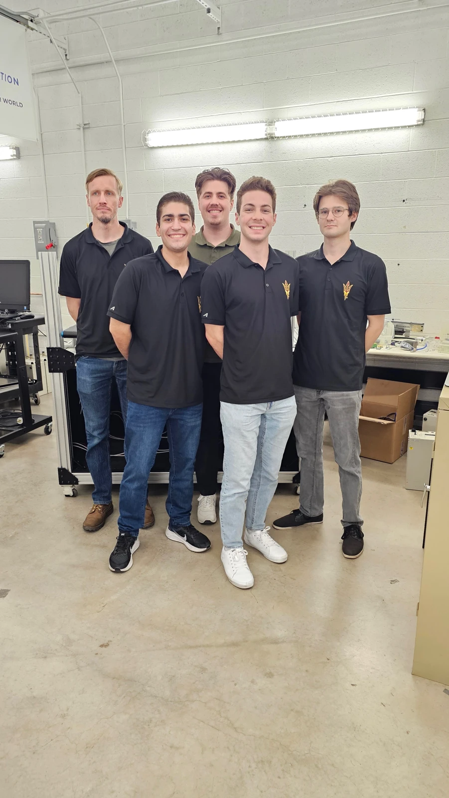

Investigating IIoT Components to Enable Smart Manufacturing
EGR 401 / 402 · Arizona State University · Team 35
Promotion animation, animated in Blender and edited in DaVinci Resolve, showing the complete manufacturing test cell and its sequential operation. All animations were created without AI assistance by myself.
The Problem
In an effort to reshore American manufacturing, the country is desperately in need of automation specialists. As it stands, the United States is facing a shortage of skilled workers in the manufacturing sector, and with the simplification of manufacturing automation, the demands of the industry would be better reflected through a two-year trade-school course. The Society of Manufacturing Engineers (SME) and the Manufacturing Education Alliance (MEA) recognized this need and sought to create an educational manufacturing test cell that could be reproduced and distributed to schools. The goal was to provide students with hands-on experience in automation, controls, and data visualization, preparing them for careers in the industry. To do this, our team designed the extensive test cell demonstrating a series of sensors and actuators, driven through a series of programmable logic controllers, visualized through a SCADA dashboard (Ignition), along with extensive written documentation and animated visualizations.
Design Considerations
Throughout the project, the team faced numerous challenges. Primarily, the necessity for specific hardware integration, which was thoughtfully provided by both our sponsors and local manufacturers. This required the team to design around adaptability, as the donated equipment would often change as availability shifted, and new groups would come forward to provide hardware. Throughout this process, the team became accustomed to the iterative nature of the design, and we were able to adapt to the changing requirements while still maintaining a cohesive vision for the final product. This involved a lot of collaboration with the hardware teams to ensure that the existing designs were compatible with the new equipment, and that all hardware could properly report to the SCADA dashboard. To ensure the final design was still modifiable, the team created a series of educational documents explaining the design decisions and how to modify the system for future use.


The final test cell involved a series of steps. First, a cube enters the system for identification. A pneumatic pick and place machine lifts it to the conveyor, where it is transported along the conveyor to the SCARA station. The SCARA lifts the cube onto a parallel conveyor, where a color sensor identifies the cube's color. The cube is then transported to the UR3 station, where the PLC reports what open pallet and position the cube should be placed in. Once a pallet is filled, the PLC reports to the turntable, which rotates the pallet to the UR5 station, where the robot lifts the sorted pallet and places it onto a separate conveyor for removal from the system. The UR5 then reloads an empty pallet back into that position, reporting it to the PLC to ensure the spots are available for future cube placement. The systems original design was demonstrated through a series of animations, which allowed the team to visualize the final product, as well as provide local manufacturers with a design plan to encourage donation of hardware.
Electrical Design and PLC Programming
The control panel design was a critical aspect of the project, as it was designed around hardware expansion and modularity. Since the final panels are being produced by an external systems integrator, fabrication friction was key. From my experience working as a control panel assembler, then designer, all electrical diagrams were designed around manufacturability, as well as ease of use for the operators. All PLCs used in this project were Allen Bradley, so it necessitated the use of Studio 5000 for programming and HMI design. The PLCs worked together to control the entire system, with a singular master PLC coordinating the operations of the other stations. The Universal Robots were programmed internal to their own controllers, while communication between the PLCs and robots were handled through Ethernet/IP. All PLCs reported back to the Windows computer that drove the SCADA dashboard utilizing Ignition.


The final control system featured four lights with corresponding buttons, as well as a touchscreen. These buttons are designed to be reprogrammed to meet the requirements of the classroom, with the touchscreen providing additional controls for driving the entire test cell together. The lights were included to teach binary feedback, with the buttons providing a simple interface to allow students to learn how to integrate binary inputs into the system. The touchscreen also allowed for dynamic interfaces.


The control panel was designed to be modular, but rapid to manufacture. It featured a single Allen Bradley PLC, with support for Ethernet/IP communication for communicating with the other PLCs in the system. This makes each module plug-and-play, allowing for easy replacement of the individual components in case of hardware failure (Which is expected in a classroom environment).
The robots all used preprogrammed movements, with the exception of the pallet loading robots, which were given pre-determined positions to place the cubes based on input, with the other axis controlled by the turntable. All programming was done within the UR programming interface, and controlled through Ethernet/IP start/stop commands, as well as the index of the pallet position to place the cube.
Offline System Integration
The largest issue our team faced was the integration of the various pieces of donated equipment, with much of it designed to only operate within its own ecosystem. This required a lot of research and coordination with manufacturers, as well as the programming team at Ignition to ensure we could take in and display all relevant data. Through various workarounds and translation layers, the team managed to integrate all of the provided equipment, and was able to share our modifications with the companies to ensure that future iterations of the hardware could be more easily integrated into future systems. A major part of this integration was the creation of tools designed to spoof the various networked components to allow the hardware to be tested without the need for their individual communication hubs, allowing the team to test the entire system without the need for an internet connection. This was a major requirement from our sponsors, as to protect the intellectual property, and to ensure that the workarounds would not be used to compromise the security of the various systems.
SCADA Design and SQL Database Setup
The design of the SCADA dashboard was a critical aspect of the project, as it provides the user with a visual representation of the entire system. Due to the nature of the system as a training cell, we elected to ditch the "Pure functionality" approach to SCADA design, instead focusing on creative visualizations that can keep students engaged, and provide an easier diagnostics platform for the students. A traditional SCADA dashboard would've presented more total data, but the team felt that it would be overwhelming to students, who would not understand the additional information, so minimizing the on-screen content in favor of readability was a priority. This design decision was made in collaboration with the SCADA and Educational team, with all graphics being produced in Affinity Designer or Blender, then imported into Ignition to use for the final dashboard.


Screenshot from the SCADA dashboard showing the first station, providing diagnostics information for the Pneumatic Pick and Place machine, as well as the conveyor.


Screenshot from the SCADA dashboard showing the fourth station, providing diagnostics information for the color sensor, as well as the cube color identification.


Screenshot from the SCADA dashboard showing the final station, providing diagnostics information for the linear smart-motor.
Demonstration of the SCADA dashboard, emulated, showing the sequential operation of the test cell. This was created to accompany the machine animation, and was not captured from live operation.
Animation and Communication
This project had three distinct components: the test cell itself, the educational content, and the marketing materials. The test-cell animation was created to provide both a video to show to potential buyers, as well as visuals to use within the educational content. The animation needed to demonstrate each of the test cell functions, as well as phases in-between to demonstrate the entire operation, and what skills can be trained on in an educational setting.
Due to the need for rapid iteration, the animation was created in a modular fashion. Each station was individually animated in their own Blender Scene, with the final video being rendered across a series of computers in my house utilizing Flamenco to ensure the fastest render times possible. Hardware changes could be reflected in the animation within a few hours, minimizing the downtime between design changes and the final animation.
Final Build and Testing
The final test cell operated as expected. Due to the nature of the project, the final test cell was unable to be transported to the showcase due to the lack of forklift availability. The project sponsor requested the removal of the operational video from this report, but as the animation was designed to demonstrate the final operation, it reflects the final design. The final test cell was handed off to the sponsor following the showcase, along with all required documentation and educational materials.
Documentation and Handoff
The documentation, as well as educational materials, were developed alongside the test cell. They were tested by handing the guide, unassisted, to students to see if they were able to assemble and operate the individual stations. Any friction points were noted, and the documentation would be updated to ensure future students would be able to complete all tasks unassisted from the provided writing. Assembly guides were also produced for each station, allowing the systems integrators to produce additional test-cells for other programs, but due to the modularity of the design, the fabrication information also included the ability to exclude certain stations, or to add additional stations based on the needs of the buyer.


Electrical schematic for the modular operator console, showing power distribution, the Allen-Bradley PLC, touchscreen, pushbuttons, and indicator lights. These diagrams provide a reference for assembling and adapting the control modules.
Post-Mortem
Across the thousand or so collective hours spent on this project, the team learned a lot about the necessity of cross-disciplinary collaboration, as well as the importance of clear communication. Throughout the process, I learned a lot about fields I had not previously been exposed to, such as SCADA design, SQL databases, robotics, and advanced animation principles. The real value came from the ability to work alongside industry professionals both within my field, and from various other talented teams. The steady pace of the project allowed for sufficient time to experiment with various designs, and helped the team conclude that our solution went above and beyond the original requirements, giving us all a great experience to finish our undergraduate education working alongside a team of talented engineers, and providing a valuable resource to the community as a whole.
The Team


EGR 401 / 402 · Team 35
Left to right: Kirk Volin, Zack Okun, Arick Nitzsche, Harrison LaBell, Dominick Trusko.